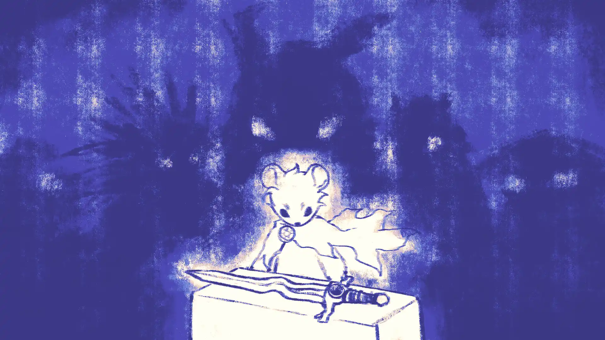
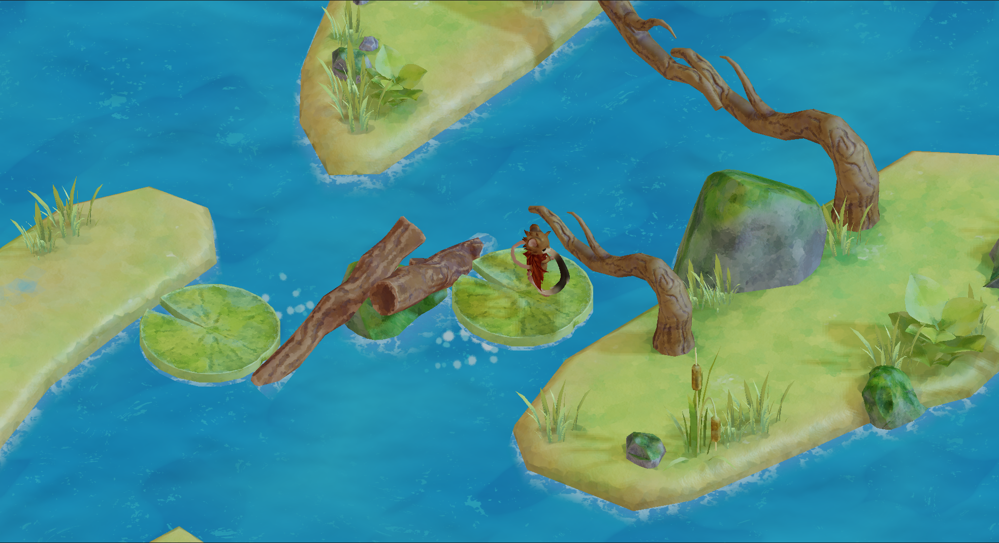
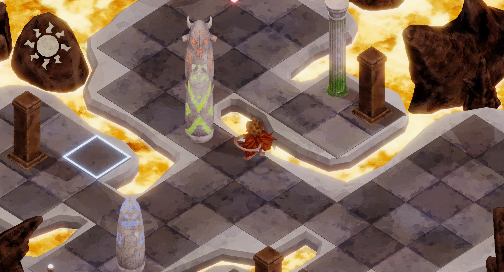
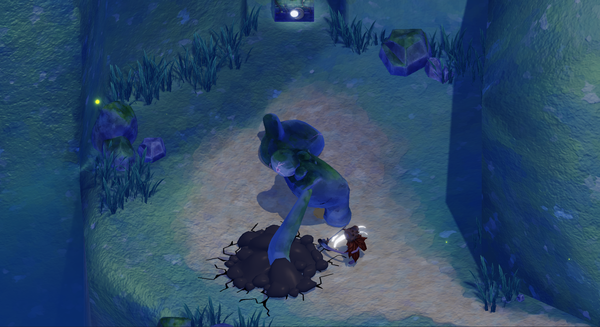

Solari and Lunari have always managed to live in a fragile peace, sharing a word where day and night moved normally. However, the tension between them has finally reached a breaking point and its consequence is catastrophic: a permanent dusk locks the sky and the corrupted nature threatens to swallow everything the Solari have ever built.
To fix the mess, Brightwhiskers, the Solari Prince, will have to venture into the dark alone. Leaving the safety of his village, he must brave the cold mists and the choking ash as well as the annoying presence of Nyella, the sharp-tongued Lunari princess who thrives in this freezing new dark and aims to protect it.
Venture into the forest and encounter the beauty and magic of nature; follow strong water currents with lily pads and discover unexpected places; face the fierce volcano and its scorching lava!


Find the different elemental temples, and complete the complex puzzles left there by ancient beings, to gain new abilities and collect the elemental gems.
Be careful when running around; there are slimy monsters and rocky giants all around, invoked by the god of nature itself. Will you be able to defend yourself with the sword of ??? and push through.
